Bird & Blend Teapot
A loose-leaf teapot that heats itself to the right temperature and stops the tea over-brewing.
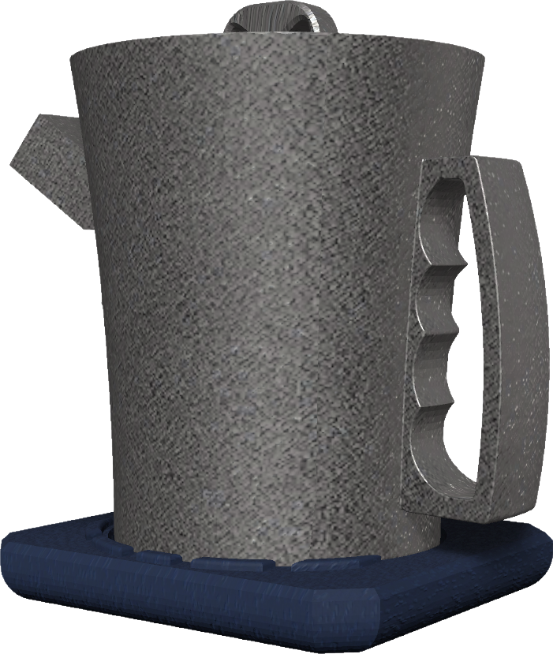
- Client
- Bird & Blend Tea Co.
- Users
- Busy young professionals
- Build
- 3D-printed prototype
- Material
- Stoneware (intended)
People like loose-leaf tea but don't make it
Loose-leaf tea has too many ways to go wrong: how much tea, what water temperature, how long to brew. Next to a tea bag it feels slow and fiddly, so people skip it.
16 young professionals at December19
December19 is a London media agency. Its staff were my target users: busy, interested in wellbeing and good tea, but short on time.
had never made loose-leaf tea
owned no tea-making tools at all
rated cleaning a teapot as somewhat difficult or neutral
They linked tea with ritual, flavour and time with others, but that didn't turn into habit. The barrier was never interest. It was knowing how much tea to use, how hot and for how long.
Bird & Blend store visit
I visited Bird & Blend's Brighton store and cafés around the city. The range of teas was huge, the staff were good at helping people choose, and samples on the counter got customers trying new blends.
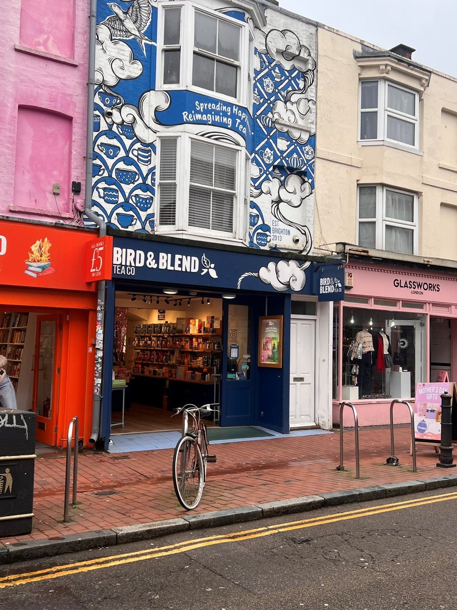
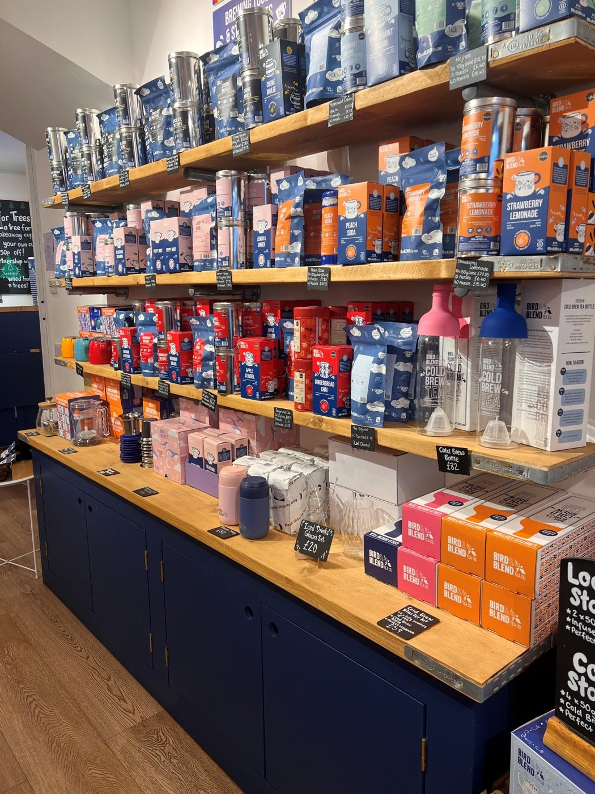
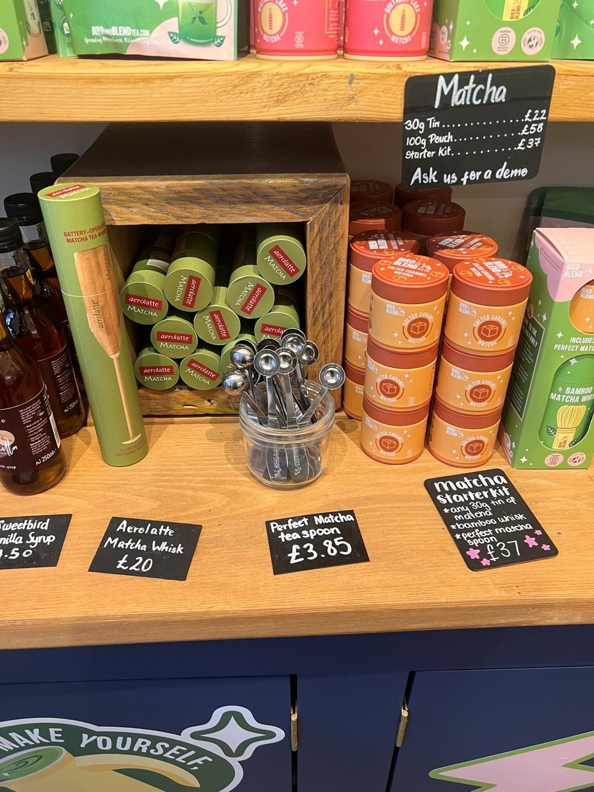
The issues with a traditional teapot
Spills when pouring
Tea drips from the spout and runs down onto the surface. A closed-off spout with a cut at the end would be drip-free.
Messy strainer
Used leaves have to be scraped out of the strainer by hand. A strainer that closes itself would stop the brew and make emptying cleaner.
Hard to clean
The inside is awkward to reach, so pots usually just get rinsed. The new design had to be easy to clean properly.
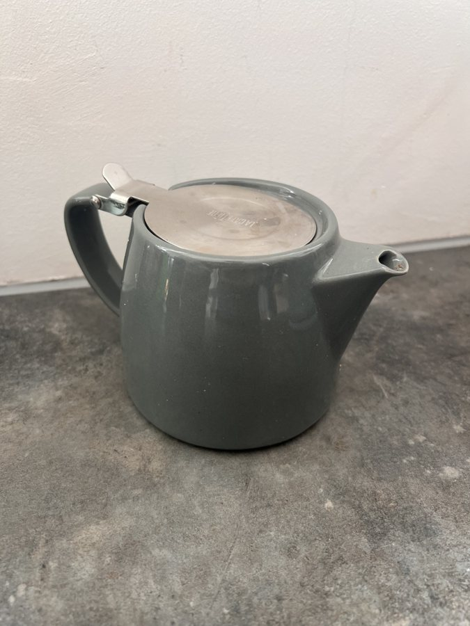
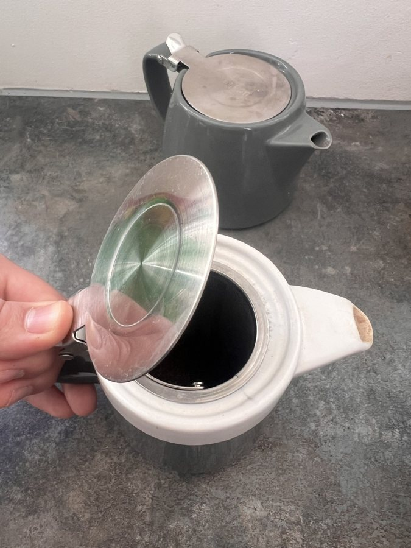
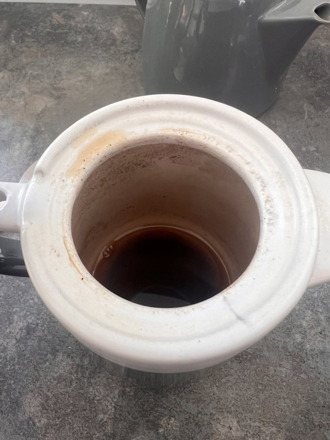
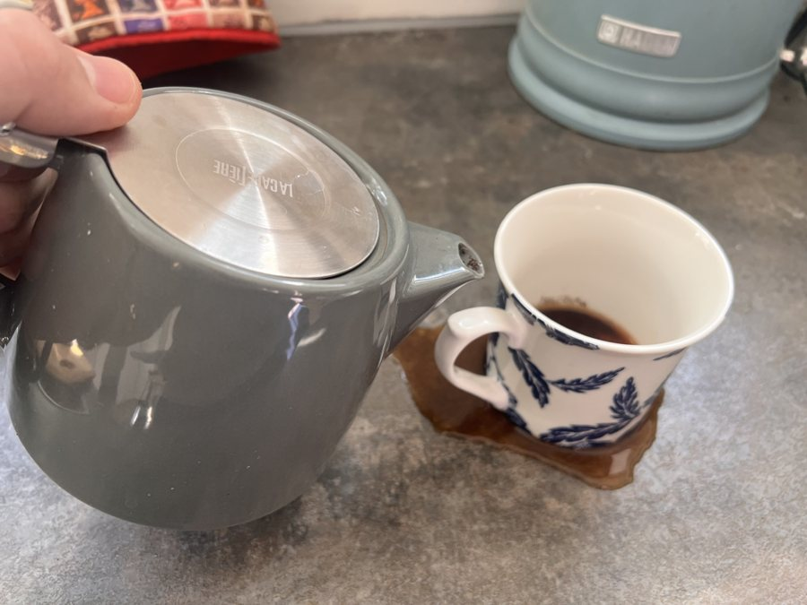
How the teapot is used
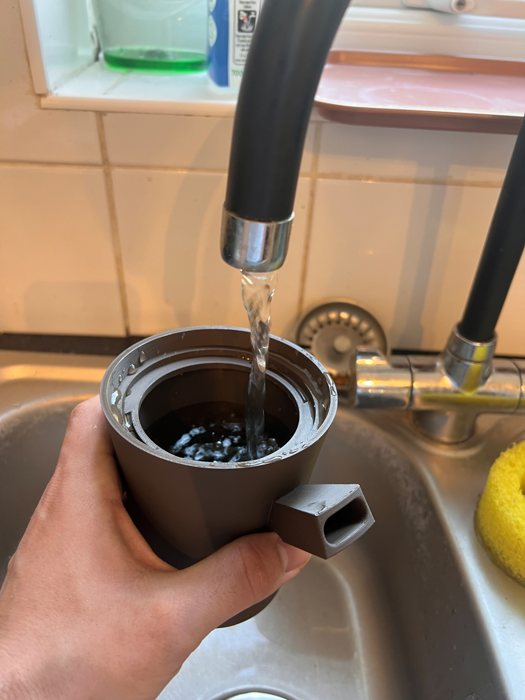
1Fill the pot with water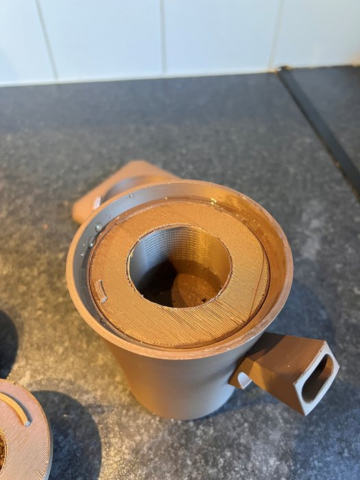
2Fit the large strainer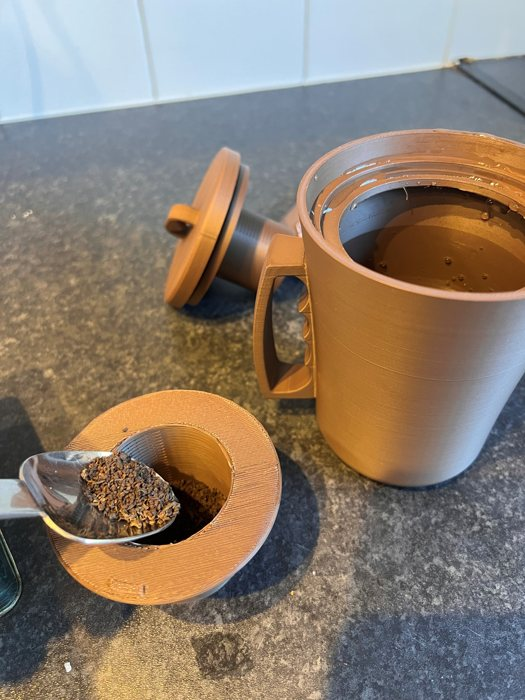
3Add a teaspoon of tea to the small strainer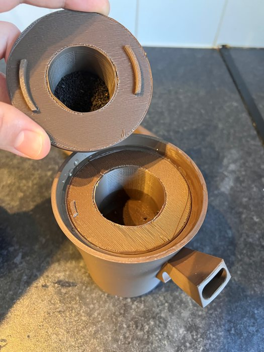
4Place the small strainer inside the large one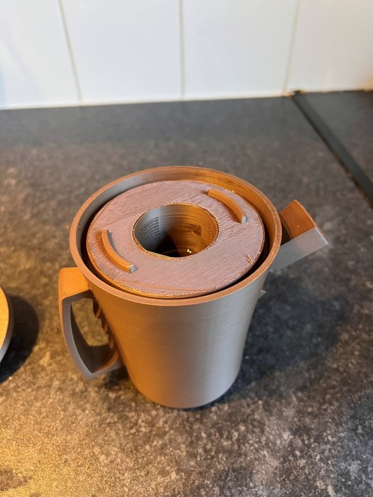
5Lock it into place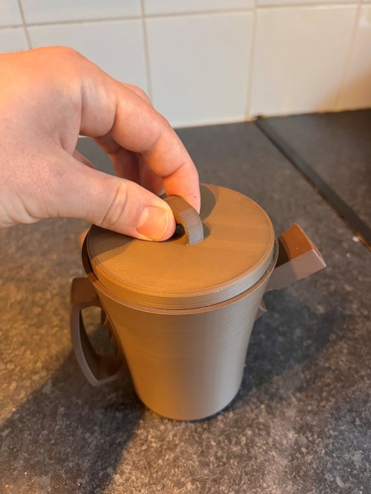
6Put the lid on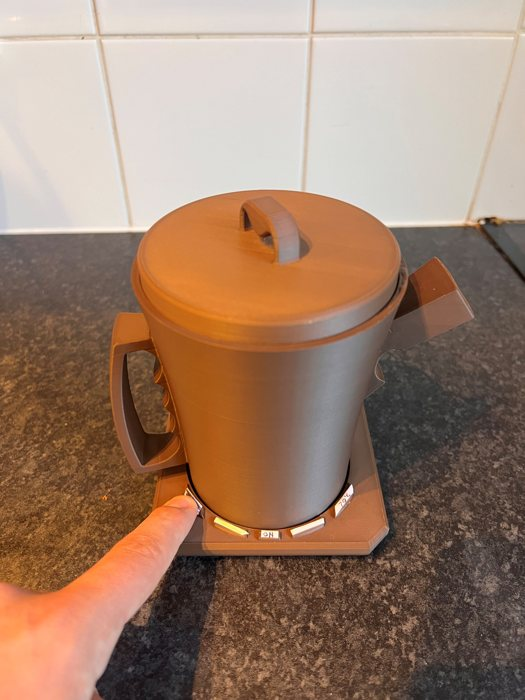
7Choose black tea on the heated base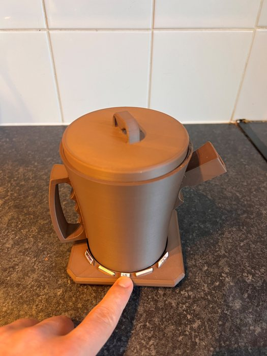
8Press the on button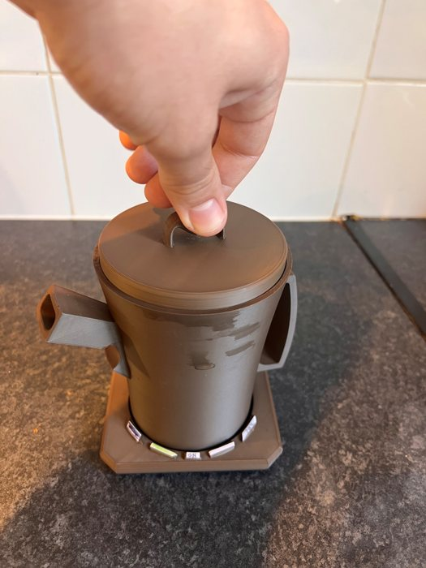
9When the tea is ready, twist the lid to close the strainer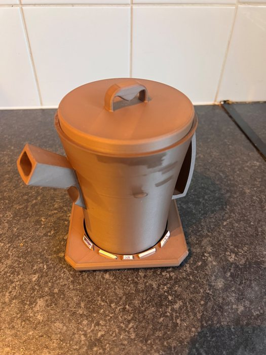
10The tea stops brewing and stays warm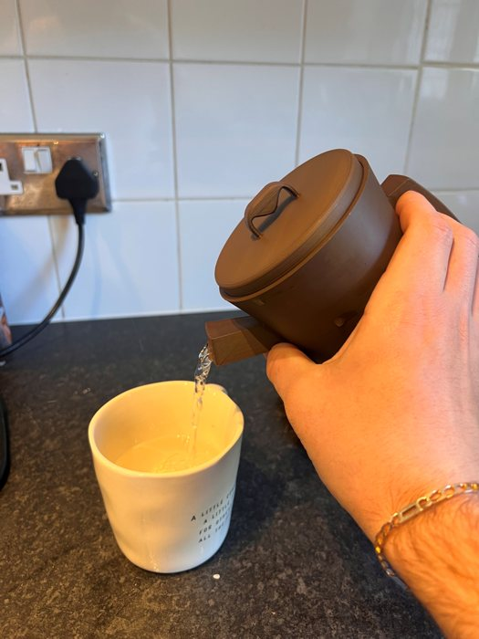
11Pour into a mug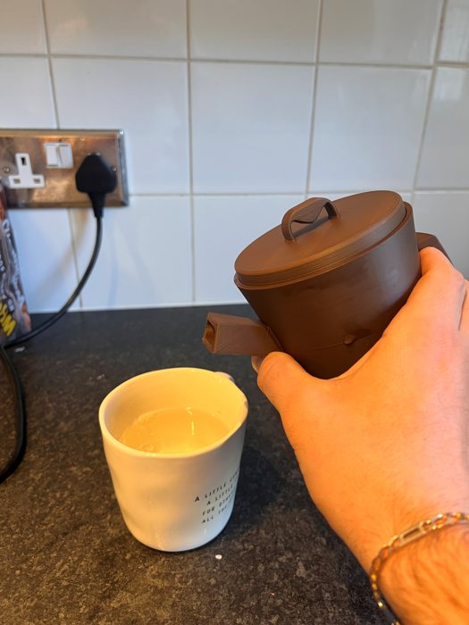
12Drip free
Kid in the corner
For the kid-in-the-corner test I handed the teapot to someone new to it, gave no instructions, and simply watched how they made a cup of tea.
Jack, student at the University of Sussex
- Age
- 22
- Drinks tea
- Once a week
- Experience
- 2 years
- Favourite tea
- English Breakfast
Jack made a cup of tea successfully on his first try. With far less tea-making experience than a regular tea drinker, he still understood how the strainer worked and which problems the pot was solving.
The one thing that didn't feel natural was the intended pour. Rather than wrapping his hand around the pot, he poured it like a normal teapot using only the back handle. Because the handle is big enough to grip comfortably either way, it still worked, which showed the design copes with however people choose to hold it.
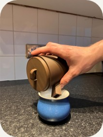
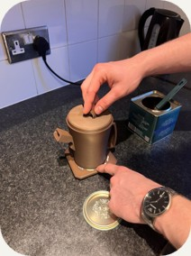
Built around Bird & Blend's B Corp values
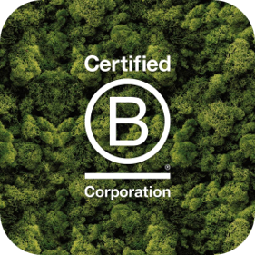
Bird & Blend is a certified B Corp, so the design had to be good for people and the planet as well as the business.
Less water
Most people boil a half or full kettle for a pot of tea. Here you pour in only what you need and the base heats it.
Less energy
Induction heats the pot directly, with less heat lost than boiling a kettle and pouring it into a cold pot.
Built to last
Stoneware is durable and recyclable, in line with Bird & Blend's aim to make products that last.
Less packaging
Making loose-leaf tea easy means fewer tea bags and less packaging waste.